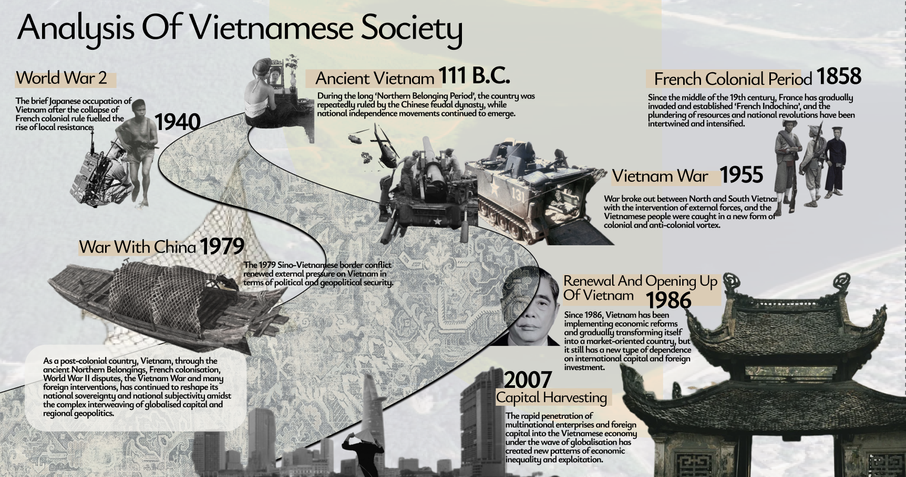
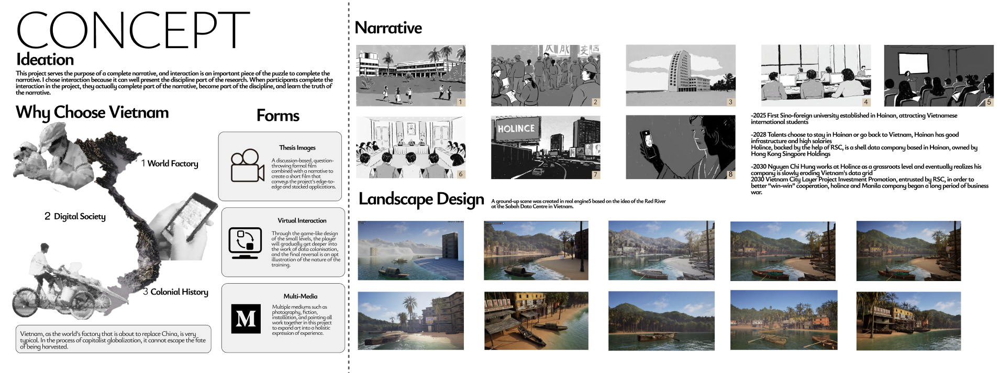
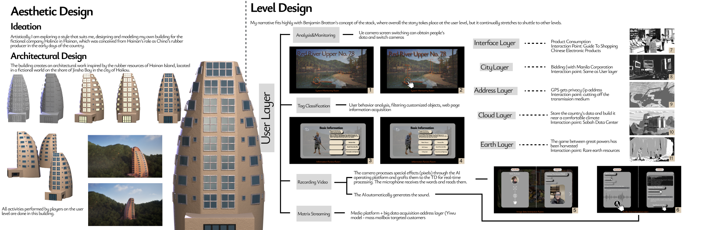
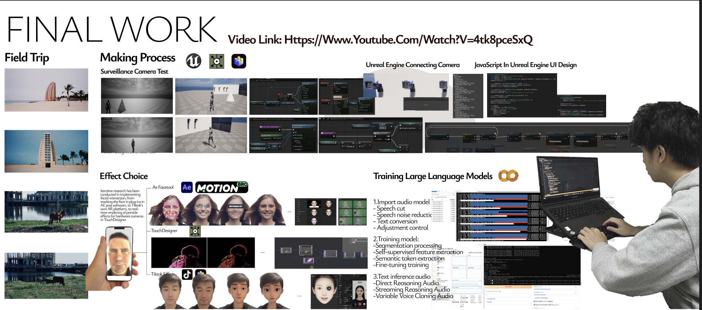
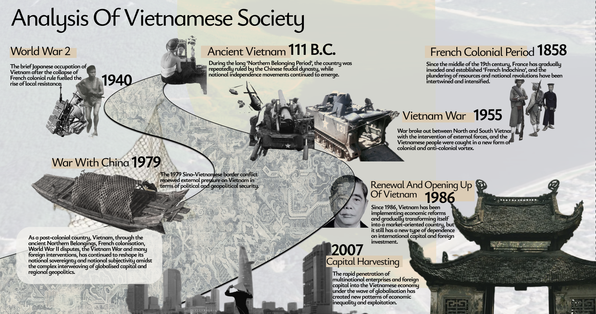
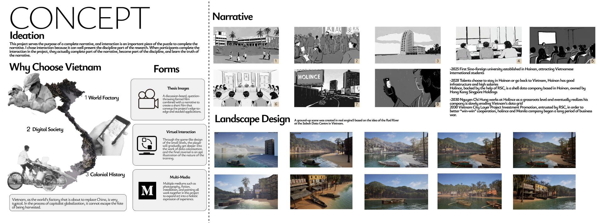
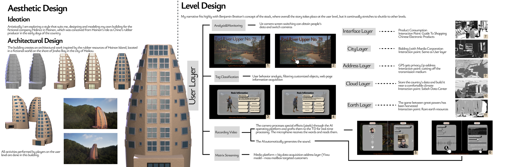
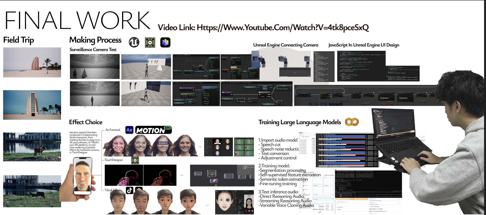

ABOUT
Speculative Design
Digital Medium Ontology Series — Chapter
Software layer
Producer: Yi Huang
Content: Remote Fantasy is a project that consists of multiple forms that connect a narrative of digital hegemony.
taking as a starting point the Chinese central government's proposed Hainan Island closed-border policy as a strand of speculative design.
Inspired by Benjamin Bratton's Stack Theory, it develops a specific conceptualisation of invasion in its multiple dimensions, combining these into a geopolitical narrative that explores the ethics of sovereignty in post-colonial states in the digital age, exemplified by Vietnam.
Format: Images,Interactive Art
Tech: 3D Modeling, Arduino,Unreal Engine
思辨设计
数字媒介本体系列分章
软件层
制作人：黄熠
内容：《情迷海南岛》是一个由多种形式构成的项目，它串联起关于数字霸权的叙事脉络。该项目受本杰明·布拉顿的“堆叠理论”启发，将入侵行为在多重维度上的特定概念化表述融合为一体，进而构建出一个由中国中央政府颁布的海南岛封关政策缘为构想的政治叙事，探讨后殖民国家在数字时代的主权伦理问题，并以越南为例加以阐释。
形式：图像，交互艺术
技术：三维建模，物理互动，虚拟引擎
 







自检：
Self Reflection: See WeChat Official Account
© 2026 All Rights Reserved.